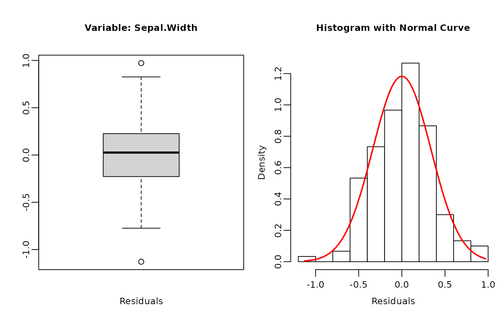
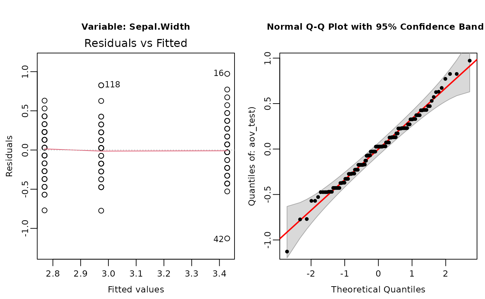
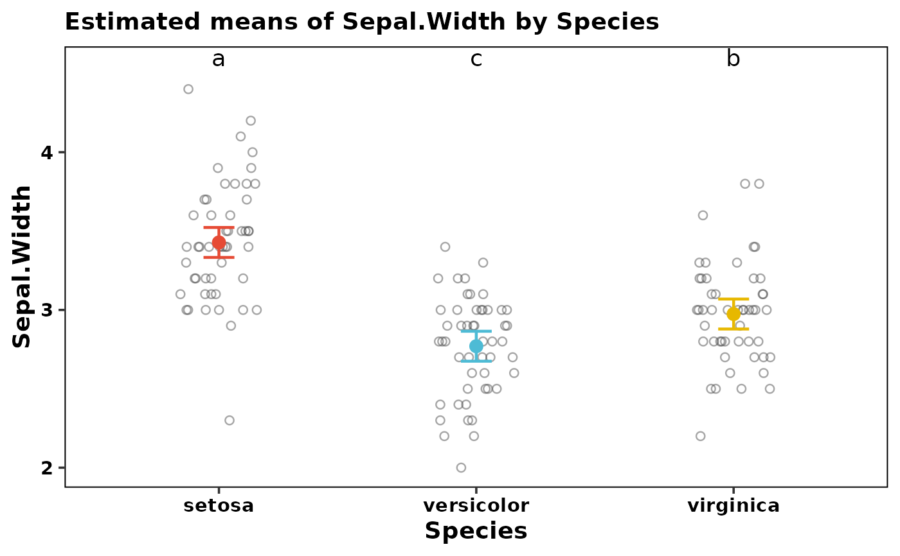
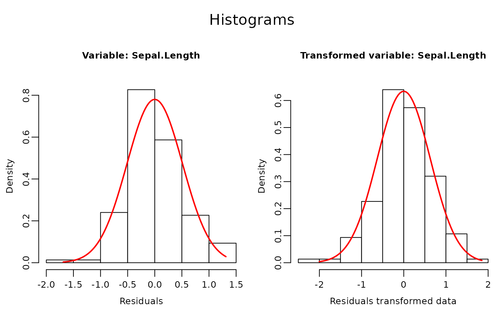
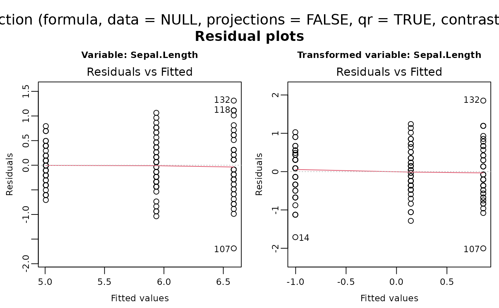
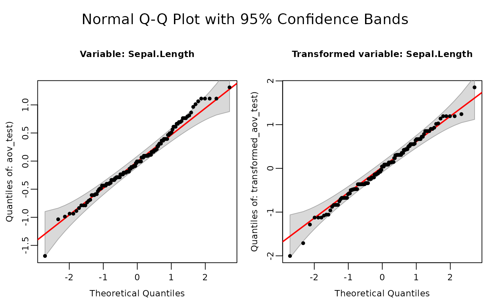
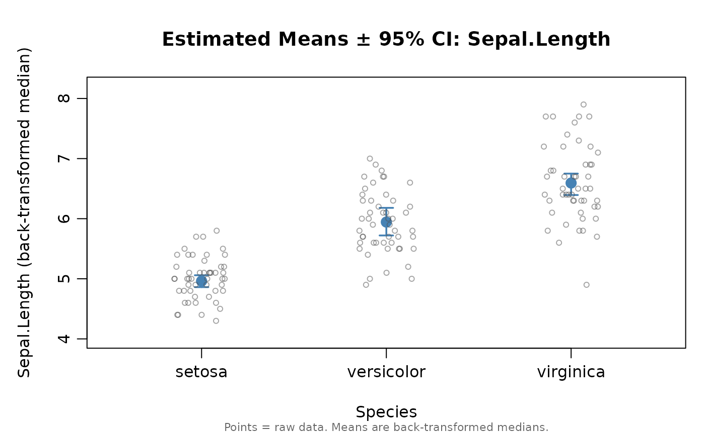

Perform multiple aov() functions with optional data transformation, inspection and Post Hoc test.
Source: R/faov.R
f_aov.RdPerforms an Analysis of Variance (ANOVA) on a given dataset with options for (Box-Cox)
transformations, normality tests, and post hoc analysis. The omnibus table
is computed with Type II Sums of Squares via
Anova, which is order-invariant for the main effects in
unbalanced designs (default summary(aov()) uses Type I SS, where the
main-effect p-values depend on the order in which terms appear in the
formula). Type II also aligns with the model-based emmeans post hoc
tests, so the omnibus table and the pairwise comparisons cannot tell
mismatched stories on unbalanced data. Several response parameters can be
analysed in sequence and the generated output can be in various formats
('Word', 'pdf', 'Excel').
Usage
f_aov(
formula,
data = NULL,
norm_plots = TRUE,
interaction_plots = TRUE,
contrast_plots = FALSE,
ANCOVA = FALSE,
transformation = TRUE,
force_transformation = NULL,
force_aov = FALSE,
alpha = 0.05,
adjust = "sidak",
anova_type = 2,
intro_text = TRUE,
close_generated_files = FALSE,
open_generated_files = interactive(),
output_type = "default",
save_as = NULL,
save_in_wdir = FALSE,
...
)Arguments
- formula
A formula specifying the model to be fitted. More response variables can be added using
-or+(e.g.,response1 + response2 ~ predictor) to do a sequentialaov()for each response parameter.- data
A data frame containing the variables in the model.
- norm_plots
Logical. If
TRUE, diagnostic residual plots are included in the output files. Default isTRUE.- interaction_plots
Logical. If
TRUE, estimated means / interaction plots are included in the output files after the post hoc table. Default isTRUE.- contrast_plots
Logical. If
TRUE, a contrast forest plot is added for each categorical post hoc term: one row per pairwise comparison, showing the estimated difference between two levels with its confidence interval and a reference line at zero. A CI that excludes zero indicates a significant difference; because the interval is on the difference itself, this "excludes zero" reading is exact (it is the same information the compact-letter display encodes, but it also shows the direction and magnitude of each difference). DefaultFALSEbecause the number of pairwise contrasts grows quickly with the number of factor levels (k levels give k(k-1)/2 contrasts); turn it on when you want the detailed pairwise picture. Main-effect and interaction contrast plots are kept separate: main-effect plots are stored asout$y1$contrast_plot_<term>(e.g.contrast_plot_treatment) while interaction cell-contrast plots are stored asout$y1$interaction_contrast_plot_<term>(e.g.interaction_contrast_plot_a_b). Contrast CIs use the sameadjustmethod as the post hoc p-values, so figure and table agree.- ANCOVA
Logical. If
TRUE, prevents automatic conversion of predictors to factors, allowing for Analysis of Covariance (ANCOVA). Default isFALSE.- transformation
Logical or character string. If
TRUE, or if"boxcox"applies af_boxcox()transformation if residuals are not normal. If"bestnormalize", appliesf_bestNormalize()transformation. IfFALSEno transformation will be applied. Default isTRUE.- force_transformation
Character string. A vector containing the names of response variables that should be transformed regardless of the normality test. Default is
NULL- force_aov
Logical. If
TRUE, runs the ANOVA even when at least one cell has \(n = 1\) (saturated model). By default (FALSE), such responses are skipped with a warning because F-statistics and p-values are undefined for saturated models. Set toTRUEonly for diagnostic purposes – results should not be reported or interpreted as valid. Default isFALSE.- alpha
Numeric. Significance level for ANOVA, post hoc tests, and Shapiro-Wilk test. Default is
0.05.- adjust
Character string specifying the method used to adjust p-values for multiple comparisons. Available methods include:
- "tukey"
Tukey's Honest Significant Difference method, appropriate for all pairwise comparisons. Controls family-wise error rate.
- "sidak"
Sidak correction that controls the family-wise error rate. Less conservative than Bonferroni.
- "bonferroni"
Conservative adjustment that multiplies p-values by the number of comparisons.
- "none"
No adjustment. Equivalent to Fisher's LSD method.
- "fdr"
False Discovery Rate adjustment, controls the expected proportion of false positives among significant results.
Default is
"sidak".- anova_type
Integer, either
2or3. Sums of Squares type for the omnibus ANOVA table computed viaAnova.2(Default)Type II. Order-invariant in unbalanced designs (
drug * doseanddose * druggive the same main-effect p-values), respects the marginality principle (each main effect is tested after all other main effects, ignoring interactions containing it), and is safe with R's default treatment contrasts. Recommended for most unbalanced designs and consistent with theemmeans-based post hoc tests.3Type III. Also order-invariant, but tests each term after all other terms including higher-order interactions. Type III is the SPSS / SAS default. For its main-effect rows to be interpretable as effects averaged across the other factors, the model must be fitted with orthogonal (sum / effect / Helmert / polynomial) contrasts. When
anova_type = 3and the user has not supplied their owncontrastsvia...,f_aovautomatically installscontr.sum/contr.polyfor the duration of the call (the previousoptions("contrasts")is restored on exit). Note that under Type III, when an interaction is significant the main effect rows are conditional on the interaction and should be interpreted with care – the cell means table thatf_aovreports automatically when an interaction is significant remains the appropriate summary.
- intro_text
Logical. If
TRUE, includes a short explanation about ANOVA assumptions in the output file. Default isTRUE.- close_generated_files
Logical. Closes open Excel or Word (NOT pdf) files before writing, depending on the output format. Works on Windows (taskkill), macOS (pkill) and Linux (pkill/soffice). Default
FALSE. WARNING: Always save your work before using this option!!- open_generated_files
Logical. Whether to open the generated output files after creation. Defaults to
TRUEin an interactive R session andFALSEotherwise (e.g. in scripts or automated pipelines). Set toTRUEorFALSEto override this behaviour explicitly.- output_type
Character string specifying the output format. Default is
"default"."default": Returns the object and lets R decide whether to print; auto-prints if unassigned, silent if assigned to a variable. Useprint(result)orplot(result)to display the returned object."console": Forces immediate printing to the console regardless of object assignment."pdf","word","excel": Saves results to a file of the corresponding format. Seesave_as,save_in_wdir, andopen_generated_filesfor file path and opening behavior."rmd": Stores the raw markdown string inside the returned object for use in R Markdown documents.
- save_as
Character string specifying the output file path (without extension). If a full path is provided, output is saved to that location. If only a filename is given, the file is saved in
tempdir(). If only a directory is specified (providing an existing directory with trailing slash), the file is named "dataname_aov_output" in that directory. If an extension is provided the output format specified with option "output_type" will be overruled. Defaults tofile.path(tempdir(), "dataname_summary.pdf").- save_in_wdir
Logical. If
TRUE, saves the file in the working directory. Default isFALSE, this avoid unintended changes to the global environment. Ifsave_aslocation is specifiedsave_in_wdiris overwritten bysave_as.- ...
Additional arguments forwarded to
aov. The argumentssubset,na.action, andweightsare handled specially: when supplied, they are applied viamodel.frameso that the n=1 cell check, Shapiro-Wilk test, Levene test, optional transformations, residual diagnostics, andemmeanspost hoc tests all see the exact same row set asaov()itself. Any otheraov()arguments (e.g.contrasts,projections,qr,contrasts.arg) are passed through unchanged.
Value
An object of class 'f_aov' containing the fitted model
(aov_test), the Type II omnibus ANOVA table from
Anova (aov_summary), normality and homogeneity
diagnostics, optional transformation results, and the emmeans
post hoc tests. Using the option output_type, it can also
generate output as R Markdown, 'Word', 'pdf', or 'Excel' files.
Includes print and plot methods for 'f_aov' objects.
Details
The function performs the following steps:
Check if all specified variables are present in the data.
Ensure that the response variable is numeric.
Fit the model with
aovand compute the omnibus ANOVA table with Type II Sums of Squares viaAnova. Type II is used (instead of the default Type I fromsummary(aov())) because Type I main-effect SS depend on the order of terms in the formula in unbalanced designs, whereas theemmeans-based post hoc tests are model-based and therefore order-invariant. Pairing Type I withemmeanscan produce mismatched stories between the omnibus and post hoc tables. Type II keeps both order-invariant and is safe with R's default treatment contrasts (unlike Type III, which would require sum / effect contrasts to be interpretable for main effects).Check normality of residuals using the Shapiro-Wilk test.
If residuals are not normal and
transformation = TRUEapply a data transformation.If significant differences are found in ANOVA, proceed with post hoc tests using estimated marginal means from
emmeans()and Sidak adjustment (or another option ofadjust =.
Effect and interaction plots. When interaction_plots = TRUE,
an estimated marginal means plot (estimate \(\pm\) 95% CI, with jittered
raw data and compact-letter-display labels) is added after the post hoc
table for each categorical predictor. For a significant categorical
interaction, interaction plots are drawn instead: a two-way interaction uses
the x-axis plus colour (both orientations), while three- and four-way
interactions add facet panels for the remaining factor(s), with one plot per
choice of x-axis factor. Interactions involving five or more categorical
factors are not plotted (a warning is issued); consult the post hoc
cell-means table instead. When the response was transformed (Box-Cox or
bestNormalize), the plotted estimates are back-transformed to the original
scale (medians). The plots themselves are kept clean for publication (data,
axes, and legend only); the descriptive label and explanatory caption are
emitted as text above and below each figure in the report. All effect and
interaction plots are ggplot2 objects and are stored in the returned
object (e.g. out$y1$effect_plot_treatment,
out$y1$interaction_plot_a_b_1) so they can be retrieved and customised
afterwards. Matches f_glm.
More response variables can be added using - or + (e.g., response1 + response2 ~ predictor) to do a sequential aov() for each response parameter captured in one output file.
Outputs can be generated in multiple formats ("pdf", "word", "excel" and "rmd") as specified by output_type. The function also closes any open 'Word' files to avoid conflicts when generating 'Word' documents. If output_type = "rmd" is used it is adviced to use it in a chunk with {r, echo=FALSE, results='asis'}
*Non-significant ANOVA results*: When the overall F-test is not significant, f_aov still reports the estimated marginal means table, but with all pairwise comparison letters replaced by *"ns"*. The numeric estimates (and their confidence intervals) are provided because they are often needed for manuscript tables, especially when the response was back-transformed from a Box-Cox or bestNormalize scale - the raw descriptive means and the emmeans values can differ, and it is the emmeans values that correspond to the actual model. The *"ns"* labels signal that pairwise differences should not be interpreted.
This function requires [Pandoc](https://github.com/jgm/pandoc/releases/tag) (version 1.12.3 or higher), a universal document converter.
Windows: Install Pandoc and ensure the installation folder.
(e.g., "C:/Users/your_username/AppData/Local/Pandoc") is added to your system PATH.macOS: If using Homebrew, Pandoc is typically installed in "/usr/local/bin". Alternatively, download the .pkg installer and verify that the binary's location is in your PATH.
Linux: Install Pandoc through your distribution's package manager (commonly installed in "/usr/bin" or "/usr/local/bin") or manually, and ensure the directory containing Pandoc is in your PATH.
If Pandoc is not found, this function may not work as intended.
Multiple Testing Across Response Variables
When several response variables are analysed in a single call
(e.g. y1 + y2 + y3 ~ treatment), each ANOVA is an independent
null-hypothesis test at level alpha. The post hoc adjustments
(adjust = "sidak", "tukey", etc.) only control the
family-wise error rate within one ANOVA (across pairwise group
comparisons for that response). They do not protect against
the inflation of Type I error across the set of responses.
Practical implication: With \(k\) independent response variables all tested at \(\alpha = 0.05\), the probability of obtaining at least one false positive is \(1 - (1 - 0.05)^k\), which reaches ~40% for \(k = 10\).
When this matters: The risk is highest in exploratory studies where many responses are screened simultaneously without a clear a priori hypothesis for each one. It is less of a concern when each response is a pre-specified primary outcome with its own biological rationale.
Possible remedies:
Bonferroni correction across responses: use
alpha = 0.05 / kwherekis the number of response variables. Conservative but simple.False Discovery Rate (FDR): apply
p.adjust(p_values, method = "fdr")to the vector of per-response ANOVA p-values after the fact.MANOVA: if the responses are correlated and you want a single omnibus test across all of them, use
manova()before interpreting individual ANOVAs.Pre-registration: declare primary vs. exploratory responses before data collection to justify differential correction thresholds.
Author
Sander H. van Delden plantmind@proton.me
Examples
# \donttest{
# The left hand side contains two response variables,
# so two aov's will be conducted, i.e. "Sepal.Width"
# and "Sepal.Length" in response to the explanatory variable: "Species".
f_aov_out <- f_aov(Sepal.Width + Sepal.Length ~ Species,
data = iris,
# Save output in MS Word file (Default is console)
output_type = "word",
# Do bestNormalize transformation for non-normal residual (Default is boxcox)
transformation = "bestnormalize"
)
#> Saving output in: /tmp/RtmplsKqN3/iris_aov_output.docx
# Print output to the console.
print(f_aov_out)
#>
#>
#> ===========================================================
#> ANOVA of response variable: Sepal.Width
#> ===========================================================
#>
#> aov call: Sepal.Width ~ Species
#>
#> Type II ANOVA Table (car::Anova):
#> Anova Table (Type II tests)
#>
#> Response: Sepal.Width
#> Sum Sq Df F value Pr(>F)
#> Species 11.345 2 49.16 < 2.2e-16 ***
#> Residuals 16.962 147
#> ---
#> Signif. codes: 0 ‘***’ 0.001 ‘**’ 0.01 ‘*’ 0.05 ‘.’ 0.1 ‘ ’ 1
#>
#> --- Post hoc Comparisons of: Sepal.Width ---
#> _________________________________________
#> Species emmean.. SE lower.CL upper.CL Letter n
#> setosa 3.428 0.0480391 3.333064 3.522936 a 50
#> virginica 2.974 0.0480391 2.879064 3.068936 b 50
#> versicolor 2.770 0.0480391 2.675064 2.864936 c 50
#>
#>
#> ==========================================================
#> ANOVA of Quantile Normalization (ORQ) TRANSFORMED response variable: Sepal.Length
#> ==========================================================
#>
#> aov call: Sepal.Length ~ Species
#>
#> TRANSFORMED Type II ANOVA Table (car::Anova):
#> Anova Table (Type II tests)
#>
#> Response: Sepal.Length
#> Sum Sq Df F value Pr(>F)
#> Species 63.212 2 119.26 < 2.2e-16 ***
#> Residuals 38.956 147
#> ---
#> Signif. codes: 0 ‘***’ 0.001 ‘**’ 0.01 ‘*’ 0.05 ‘.’ 0.1 ‘ ’ 1
#>
#> --- BACK TRANSFORMED Post hoc Comparisons of: Sepal.Length ---
#> Species median (BT) lower.CL upper.CL Letter n
#> virginica 6.593552 6.422851 6.726200 a 50
#> versicolor 5.944039 5.752349 6.135501 b 50
#> setosa 4.961446 4.881046 5.040758 c 50
#> ___________________________
#>
#> Note: 'median (BT)' = back-transformed estimated marginal mean. Back-transforming a mean from a transformed scale returns the MEDIAN on the original scale, not the arithmetic mean. Report these as back-transformed medians. CIs are valid; SE is omitted (asymmetric on original scale).
#>
#>
# Plot residual plots.
plot(f_aov_out)






# }
#To print rmd output set chunck option to results = 'asis' and use cat().
f_aov_rmd_out <- f_aov(Sepal.Width ~ Species, data = iris, output_type = "rmd")
cat(f_aov_rmd_out$rmd)
#>
#> # Assumptions of ANOVA
#> Checking the assumptions of ANOVA (Analysis of Variance) are critical for ensuring the validity of its results:
#>
#>
#> ## 1. Independence
#> - Observations must be independent both within and between groups. This means that the value of one observation should not influence another.
#> - Independence violations cannot be corrected statistically and invalidate the analysis, making proper experimental design essential.
#>
#> ## 2. Normality
#> - The residuals (errors) of the model are assumed to be normally distributed. This assumption applies to the residuals, not necessarily the raw data.
#> - ANOVA is robust to minor deviations from normality, especially with large and balanced sample sizes. For small or unbalanced samples, violations can lead to **unreliable results**, requiring a data transformation or alternative tests (Welch's ANOVA, Kruskal-Wallis Test).
#> - Normality of the residuals can be tested using a Shapiro-Wilk or Anderson-Darling Test. It can also be graphically assessed using a Box Plot, Q-Q plot or Histogram.
#>
#> ## 3. Homogeneity of Variances (Homoscedasticity)
#> - The variances within each group should be approximately equal (homogeneity of variances). This ensures that the F-test statistic is reliable.
#> - Homogeneity of variances assumption in ANOVA should be tested on the residuals, not directly on the raw data.
#> - Levene's test can be applied to check for homogeneity of variances. It can also be graphically assessed by plotting residuals vs. fitted values and checking for patterns.
#> - If violated, a data transformation or alternative tests (Welch's ANOVA, Kruskal-Wallis Test) are required.
#>
#>
#> ## 4. Additivity (No Unaccounted Systematic Effects)
#> - For models without interaction terms, it is assumed that the effects of different factors are additive. That is, the combined effect of factors can be expressed as the sum of their individual effects.
#> - However, if interaction terms are included in the model, this assumption does not apply because ANOVA then explicitly accounts for potential interactions.
#>
#>
#>
#>
#> # Analysis of: Sepal.Width
#>
#> ## Normality and homoscedasticity of residuals of: Sepal.Width
#> **Levene's test** for homogeneity of residuals: F-Statistic = 0.5902 p-value = 0.5555 . According to 'Levene's Test' (0.5555 > 0.05) residuals do not depart from **equal variance** (homoscedasticity).
#>
#>
#> **Shapiro-Wilk Test** for Normality of residuals: W = 0.9895 p-value = 0.323 . According to 'Shapiro-Wilk Test' (0.323 > 0.05) no significant departure from **normality** was detected
#> for the model residuals; check Q-Q plot.
#>
#>
#> Anderson-Darling normality test : A = 0.495 p = 0.2116
#> According to 'Anderson-Darling test' (0.2116 > 0.05) no significant departure from **normality** was detected
#> for the model residuals; check Q-Q plot.
#>
#> Check the plots in the figure below to assess normality.
#> 
#>
#>
#> ## Observed Descriptives Table of: Sepal.Width ~ Species
#>
#> ----------------------------------------------------------------------------------
#> Species n mean sd se min Q1 median Q3 max
#> ------------ ---- ------- ------- ------- ------- ------- -------- ------- -------
#> setosa 50 3.428 0.379 0.054 2.300 3.200 3.400 3.675 4.400
#>
#> versicolor 50 2.770 0.314 0.044 2.000 2.525 2.800 3.000 3.400
#>
#> virginica 50 2.974 0.322 0.046 2.200 2.800 3.000 3.175 3.800
#> ----------------------------------------------------------------------------------
#>
#> **TIP:** These values represent your actual observed sample characteristics.
#> Use this table for *Methods* sections or Supplementary materials (to describe the sample).
#>
#>
#> **CAUTION:** For statistical inference (significance letters and *p-values*) and reporting
#> main findings in the *Results* section, you **must** use the Emmeans table below.
#>
#>
#> ## ANOVA Summary of Sepal.Width
#>
#>
#>
#> **Table** of aov call: Sepal.Width ~ Species
#> Sums of Squares are computed with **Type II** via `car::Anova()`, which is order-invariant for the main effects in unbalanced designs and consistent with the model-based `emmeans` post hoc tests reported below.
#>
#> --------------------------------------------------------
#> Sum Sq Df F value Pr(>F)
#> --------------- -------- ----- --------- ---------------
#> **Species** 11.34 2 49.16 **4.492e-17**
#>
#> **Residuals** 16.96 147
#> --------------------------------------------------------
#>
#> Type II ANOVA (car::Anova)
#>
#>
#>
#>
#> ## Post Hoc Test on Estimated Marginal Means of Sepal.Width
#>
#>
#> Estimated Marginal Means (emmeans) are model-based mean values of Sepal.Width for each level of the significant predictor(s), averaged over all other
#> factors in the model. Unlike raw data averages (see: Observed Descriptives Table),
#> emmeans correct for unbalanced designs and reflect the statistical
#> model used for pairwise comparisons (significance testing **letters**). SE values are identical for groups with equal
#> sample sizes and differ only to reflect variation in group size ($n$). The $n$ column corresponds to the raw observed data of Sepal.Width. If $n$ is blank, there is no observed data and
#> emmeans estimates marginal means from the model.
#>
#>
#>
#>
#>
#>
#> *Reporting Tips:* For main results showing significant differences, prioritize
#> the Emmeans table (preferably with 95% CIs).
#> Figures should include all individual raw data points to show the
#> Model Fit (Emmeans) relative to the Observed Spread (Raw Data).
#>
#>
#>
#>
#>
#>
#>
#> **Post Hoc Marginal Means Table** of aov call: Sepal.Width ~ Species
#>
#> -----------------------------------------------------------------
#> Species emmean SE lower upper Letter n
#> CL CL
#> ------------ ---------- ------- --------- --------- -------- ----
#> setosa 3.428 0.048 3.333 3.523 a 50
#>
#> virginica 2.974 0.048 2.879 3.069 b 50
#>
#> versicolor 2.770 0.048 2.675 2.865 c 50
#> -----------------------------------------------------------------
#>
#> Degrees of freedom: 147
#> Confidence level used: 0.95
#>
#> **Note:** Groups in the "Letters" column sharing the same letter are **not** significantly different (α = 0.05). Groups with different letters are significantly different. Sharing a letter indicates insufficient evidence to claim a difference; it does not prove the groups are identical.
#>
#>
#> ## Estimated Means Plot of: Sepal.Width (Species)
#> 
#>
#> *Points are (jittered) raw data; estimates are model estimated marginal means with 95% CI. Groups sharing a letter are not significantly different (α = 0.05); groups with different letters are significantly different. Sharing a letter indicates insufficient evidence of a difference, not proof that the groups are identical.*
#>
